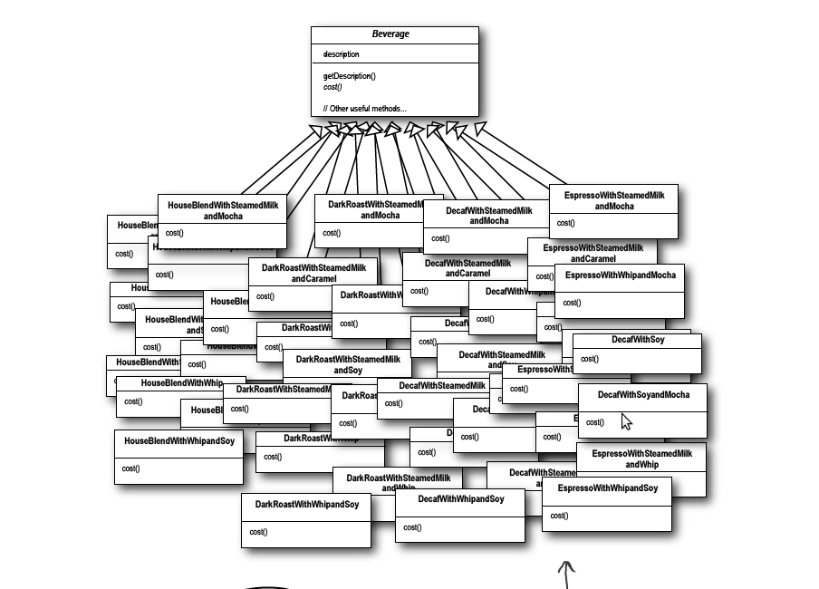
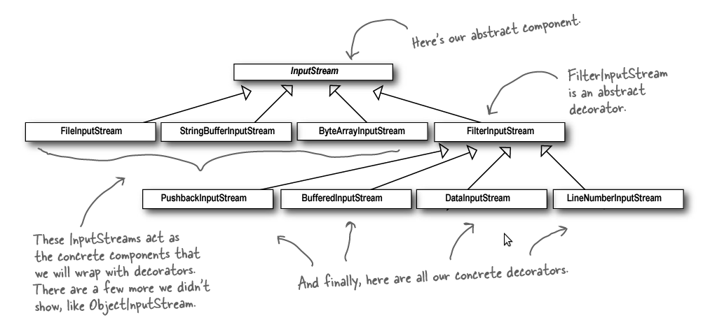

decorator模式¶
decorator模式定义¶
Decorator: Attach additional responsibilities to an object dynamically. Decorators provide a flexible alternative to subclassing for extending functionality.
Decorators: 向一个对象 动态 地绑定额外的 功能（责任）. Decorators 向为了实现扩展功能而提供一种除继承外更加 灵活 的方法。
问题描述¶
一家咖啡店随着规模扩大，除了提供常见的咖啡外，还向顾客提供诸如加 mocha, whip, soy 等 辅料，所以现在需要解决
- 如果增加辅料的类型如何处理
- 如果增加咖啡的类型如何处理等
最开始的设计如下(完全使用继承）：
更好的办法是使用 Decorators 模式，那么会很好地满足需求。
使用 Decorators 后的类图如下：

现实中的例子包括，java中的IO， 如下图所示：
具体代码¶
下载请点击 这里
1 2 3 4 5 6 7 8 9 10 11 12 13 14 15 16 17 18 19 20 21 22 23 24 25 26 27 28 29 30 31 32 33 34 35 36 37 38 39 40 41 42 43 44 45 46 47 48 49 50 51 52 53 54 55 56 57 58 59 60 61 62 63 64 65 66 67 68 69 70 71 72 73 74 75 76 77 78 79 80 81 82 83 84 85 86 87 88 89 90 91 92 93 94 95 96 97 98 99 100 101 102 103 104 105 106 107 108 109 110 111 112 113 114 115 116 117 118 119 120 121 122 123 124 125 126 127 128 129 | #include <iostream>
#include <string>
using namespace std;
class Beverage
{
public:
string description;
double costs;
int size; //1,2,3 => small, medium, big
virtual string getDescription()
{
string size;
size = (this->size==1)?"small":((this->size==2)?"medium":"big");
return size + " " + description;
}
virtual double cost(){return costs*size;}
virtual void setSize(int size){this->size=size;}
virtual int getSize(){return size;}
virtual void printout()
{
cout<<this->getDescription()<<" costs:"<<this->cost()<<endl;
}
};
class CondimentDecorator:public Beverage
{
public:
Beverage *beverage;
CondimentDecorator(Beverage *beverage)
{
size = beverage->getSize();
}
virtual double cost()
{
return beverage->cost() + costs*beverage->getSize();
}
virtual string getDescription()
{
return beverage->getDescription() + ", " + description;
}
/*
virtual ~CondimentDecorator()
{
cout<<beverage->getDescription()<<" was called."<<endl;
delete beverage;
}
*/
};
class HouseBlend:public Beverage
{
public:
HouseBlend()
{
description = "HouseBlend" ;
costs = .89;
}
};
class Espresso:public Beverage
{
public:
Espresso()
{
description = "Espresso";
costs = 1.99;
}
};
class DarkRoast:public Beverage
{
public:
DarkRoast()
{
description = "DarkRoast";
costs = .99;
}
};
class Decaf:public Beverage
{
public:
Decaf()
{
costs = 1.05;
description = "Decaf";
}
};
class Mocha:public CondimentDecorator
{
public:
Mocha(Beverage *beverage):CondimentDecorator(beverage)
{
this->beverage = beverage;
costs = 0.2;
description = "Mocha";
}
};
class Soy:public CondimentDecorator
{
public:
Soy(Beverage *beverage):CondimentDecorator(beverage)
{
this->beverage = beverage;
costs = 0.15;
description = "Soy";
}
};
class Whip:public CondimentDecorator
{
public:
Whip(Beverage *beverage):CondimentDecorator(beverage)
{
this->beverage = beverage;
costs = 0.10;
description = "Whip";
}
};
int main()
{
DarkRoast d;
d.setSize(2);
Whip w(new Soy(new Whip(new Mocha(&d)))); // add the decorator as many as you need
w.printout();
return 0;
}
|
输出结果为:
medium DarkRoast, Mocha, Whip, Soy, Whip costs:3.08
更多注意¶
- Decorators 会导致出现很多一些小类（装饰类），导致类特别多。
- 如果要在具体的 Component 类中有相关的行为，则可能不适用（如在DarkRoast中有打折相关的行为）
- DarkRoast 模式通常会和 Factory 或者 Builder 模式一起使用
新的设计原则：
Classed should be open for extension but closed for modification.